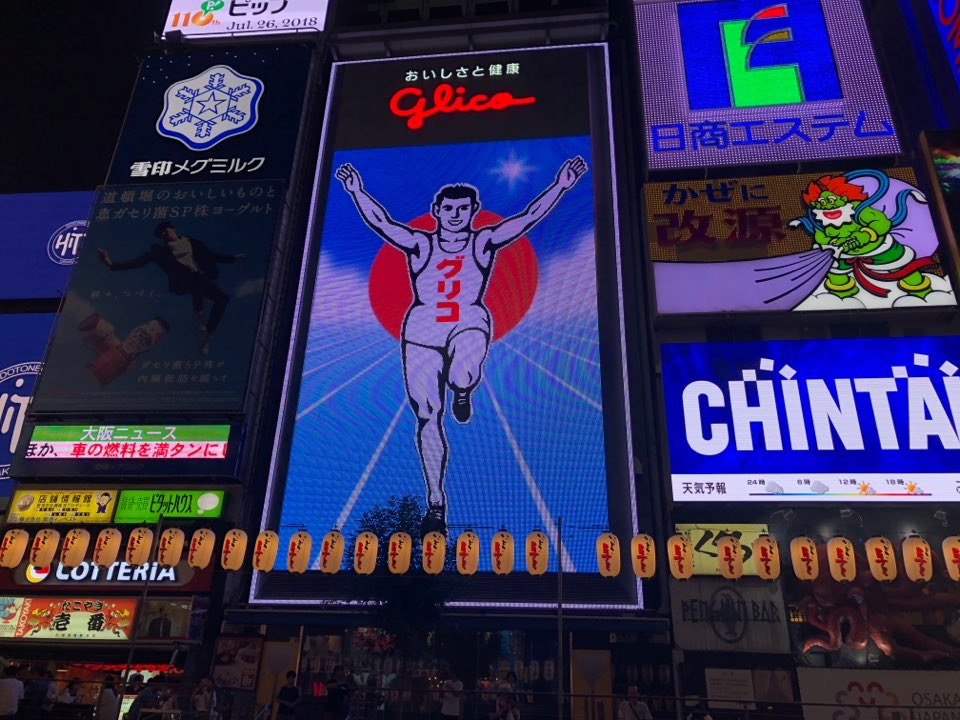
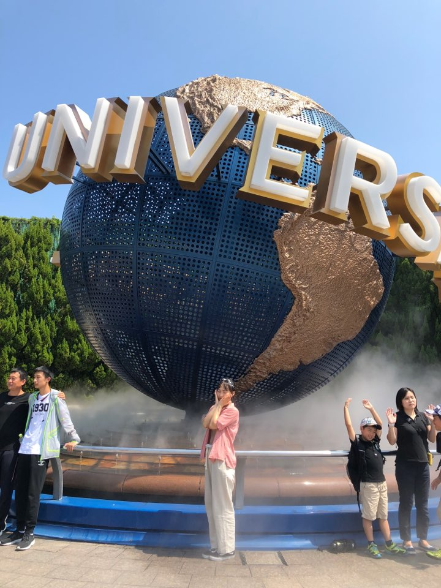
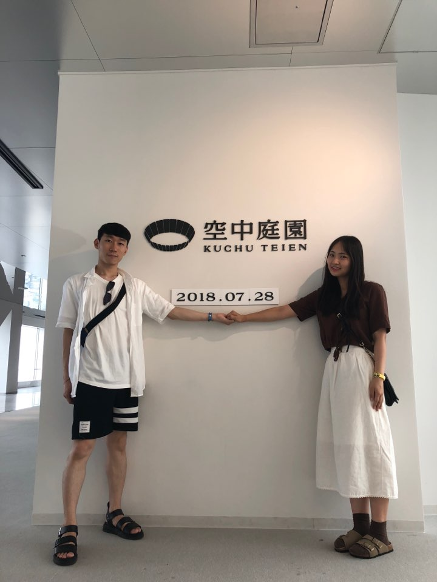
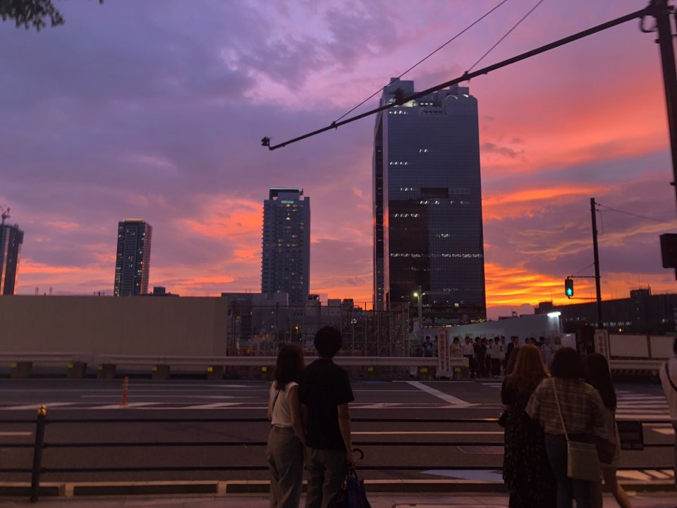
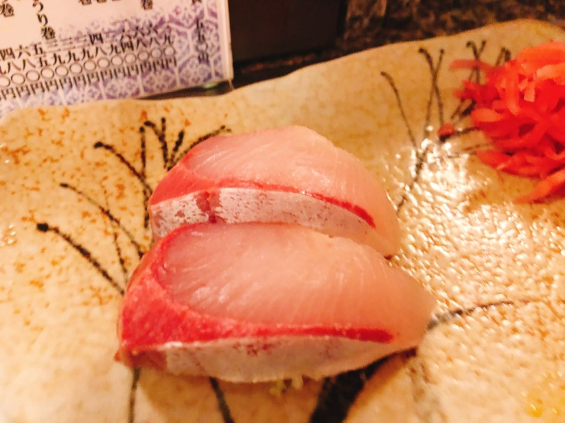
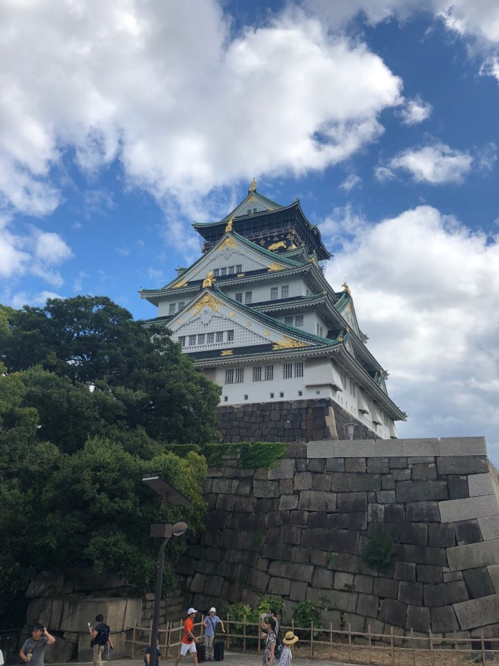
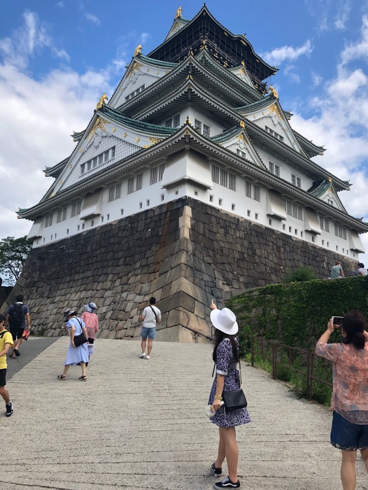

오사카 난바역에 위치한 도톤보리는 오사카여행 중에 꼭 들려야 할 가게들이 즐비해 있는 곳입니다.
도톤보리에는 신사이바시, 닛폰바시 등의 오사카 번화가를 통과하고, 오사카성 근처까지 흘러들어가는 강이 있습니다.
리버크루즈라는 배를 타고 오사카강을 투어할 수 있습니다.
리버크루즈는 오사카주유패스를 이용하면 무료로 이용하실 수 있습니다.
도톤보리에는 오사카의 상징이라고 할 수 있는 간판들이 많이 있습니다.
특히, 일본 유명 제과회사인 에자키 글리코의 마스코트인 글리코상 간판이 여행객들 사이에서 아주 인기가 많습니다.
여행객들이 도톤보리에 들리면 글리코상과 같은 포즈를 취하며 사진을 찍는 것이 아주 유행화 되었죠.
저도 한장 아니 두장 세장 남겼어요.
유니버셜스튜디오 재팬을 가기 위해서 오사카여행을 가는 사람들도 많습니다.
저도 이번 오사카여행에서 유니버셜스튜디오 재팬에서 하루 일정을 잡고 갈 만큼 시간을 투자했는데요.
여행에서 1박을 다 채울만큼 재미있는 장소였어요.
유니버셜스튜디오 재팬을 가장 성수기인 7월 말에 방문하게 될 줄이야..
가기전에 굉장히 두려웠는데요. 거기가면 사람 엄청많아서 놀이기구 타기도 힘들거야, 개장하자마자 해리포터 타러 달려야해
이런 공포의 경고와 깨알 팁을 모아갈 만큼 기대도 컸고 걱정도 컸습니다.
하지만 유니버셜스튜디오 재팬에 도착하자마다 오길 잘했다! 확신이 들었어요
해리포터는 정말 꼭 꼭 타야해요.
우메다는 햅파이브, 한신백화점, 공중정원, 스시맛집이 있기로 유명한 곳으로 알고 출발했어요 특히 햅파이브를 낮에 타는 것이 좋을지 밤에 타는 것이 좋을지 고민했죠 우리는 낮에 타는걸로 정했어요! 오사카주유패스를 가지고 있다면 무료로 탈 수 있다고 해서 오사카주유패스를 들고 갔습니다. 밖에서 본 햅파이브는 정말 예뻤어요. 우리나라는 대관람차 별로 없는데 일본은 이런 대관람차가 굉장히 많은 나라같아요. 햅파이브에서 노래도 틀 수 있다고 해서 노래를 들으려고 핸드폰을 연결했는데, 소리가 안나더라구요. 아쉬웠지만 노래듣는 것은 포기하고 사진이나 많이 남기기로 마음먹고 셀카봉을 꺼내서 사진도 많이 찍고 최고층에서 아래를 내려다보면서 스릴을 즐겼답니다. 햅파이브 타기전에 직원분이 카메라로 사진을 찍어주시는데 5000원에 구매할 수 있어요. 사진 화질을 별로랍니다.. 정말 기념샷으로 남기고 싶다면 구매하는거 추천하지만 잘 나오기를 기대하지는 마세요ㅎㅎ 햅파이브를 타고 한신백화점으로 이동해서 항상 줄이 이어진다는 식품코너 구경을 하고 일본에서만 구매할 수 있는 두툼한 돈카츠 샌드를 구매해서 먹었어요. 두품한 고기가 들어 있어서 맛이 없을 수가 없죠~ 가격은 비쌌어요.

한신백화점에서 배를 채우고 다음은 공중정원으로 이동했어요. 해질녘에 공중정원 스카이빌딩으로 가서 앉아서 맥주도 마시며 이야기를 나누며 여유를 즐길 수 있었답니다. 에쁜 경치를 보고 바깥바람을 마시며 최고층에서 경치를 즐기고 나니 배가 고프더라구요ㅎㅎㅎ 추천받은 우메다 스시맛집인 카메스시로 이동하기 시작했어요.
스시집으로 가는 길은 정말 필름 하나가 덮인것 처럼 아름다웠답니다.
전형적인 일본의 전차길 풍경과 붉은 노을이 남빛하늘과 함께 만나서 감상하며 이동하다보니 어느덧 그토록 찾던 카메스시집에 도착했어요.
정말 인생스시라고 할 만큼 스시가 두툼하니 맛있었어요. 다시 오사카여행을 간다면 또 다시 들릴거에요! 바에서 스시를 만들어주시는 센세도 친절해서 더 맛있게 먹고 왔어요.

오사카성은 16세기에 도요토미 히데요시(豊臣秀吉)가 일본 통일을 달성한 후 권력을 과시하기 위해 지은 성이라고 합니다. 오사카여행 일정을 계획하며 오사카성을 갈지 말지 고민을 굉장히 많이 했어요. 오사카주유패스로 무료로 방문할 수 있는 역사의 장소라고 생각하고 방문했어요. 오사카성의 주탑은 지상 8층으로 덴슈카쿠(天守閣)라고 하는 높이 55m의 누각이에요. 덴슈카쿠의 1층에서 7층까지는 역사자료관이며 도요토미 히데요시의 목상을 비롯해 당시의 무기와 갑옷, 복원 모형, 민속자료 등이 보관되어 있어요. 시어터 룸에서는 도요토미 히데요시와 오사카 성을 소개하는 영상을 90인치 화면으로 제공하고 있어서 관람할 수 있었어요. 하지만, 7월말의 오사카는 정말 더웠고 오사카성을 방문했을 때는 특히 햇빛이 엄청났답니다. 이런날씨에 오사카성 8층을 갈 수 있는 엘레베이터를 타기 위해서는 땡볕에서 줄을 서야했어요. 줄서서 엘레베이터 타는 것을 포기하고 계단으로 빠르게 최상층인 8층을 오르기로 결정했답니다. 무더위에 8층까지 오르는데 다리가 후덜후덜 거렸어요. 힘들게 오사카성 8층에 도달하면 오사카 공원과 주변의 멋진 경치를 감상할 수 있는 전망대가 설치되어 있다고 해서 힘들게 올랐지만, 제가 생각했던 경치와 사뭇달랐어요. 우메다 스카이빌딩에서 보았던 야경이 몇배로 더 아름다웠고 오사카성 8층에서 내려다본 광경은 철조물에 둘러싸여서 제대로 감상하기도 힘들었어요. 또한 관람객이 많은데 서있을 곳이 좁아서 보기도 힘들었답니다. 오사카성은 벚꽃시즌에 방문해서 구경해야 그 경치가 정말 아름답다고 하는데요. 벚꽃시즌이 아니여서 일까요. 오사카성을 둘러싼 강의 물냄새와 무시무시하게 생긴 까마귀(?)들이 깍깍거리는 소리가 좋지는 않았어요. 그래서 성의 외부는 아름다웠고 사진도 한장 남겼어요. 오사카성은 벚꽃시즌이 아니면 8층까지 올라가서 구경하시지 말고 오사카성을 둘러싼 공원구경 후 성 외부에서 기념사진만 남기시는 걸 추천드려요.
